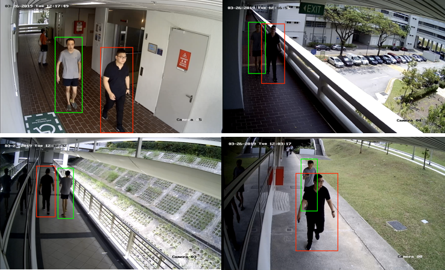
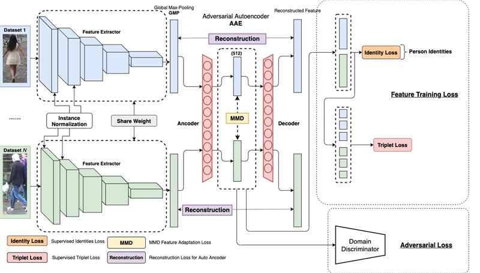
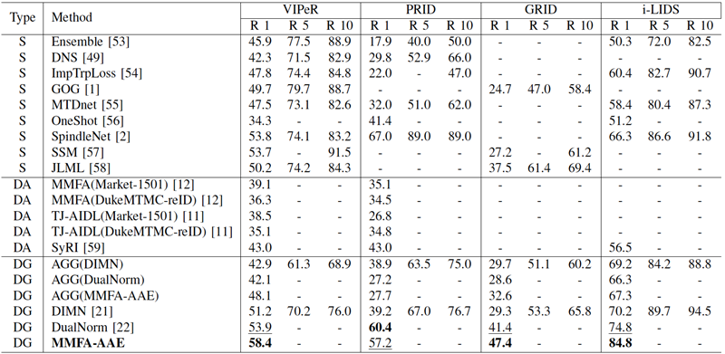
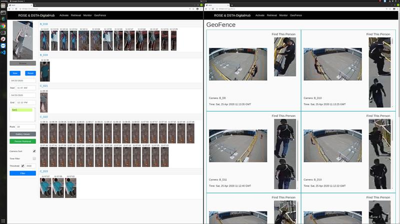
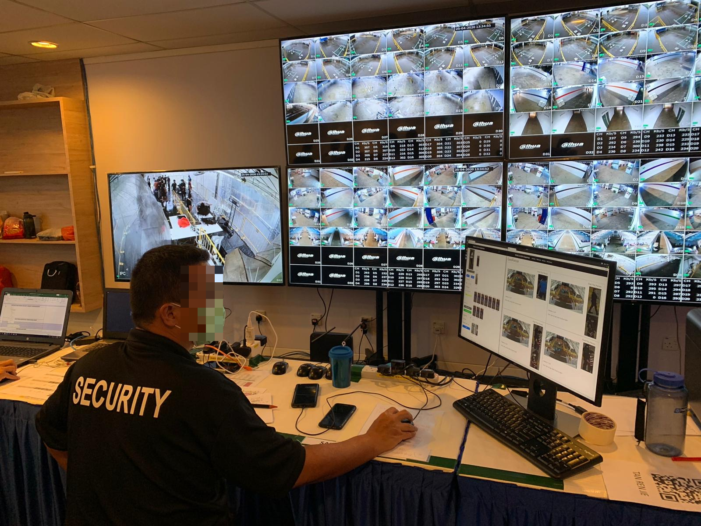

Background of Person Re-ID
Person re-identification (Person Re-ID) is defined as the problem of matching people across disjoint camera views in a multi-camera system. It is useful for a number of public security applications such as intelligent camera surveillance systems. In a typical real-world application, one single person, or a watch-list of a handful of known people, is provided as the target set for searching through a large volume of video surveillance footage. Given a person seen in one camera, the aim is to re-identify that person in another camera based on their visual appearance.

Regardless of the increasing attention received from both the academic and industry worlds, person re-identification remains an extremely challenging task. This is due to a list of reasons including: (1) different viewing angles across cameras, (2) very low frame rate in typical CCTV footage, (3) crowded environments, (4) many occlusions, (5) imperfect human detection, and (6) the open-set nature of the problem — an unlimited number of classes (identities).
ROSE-IDENTITY Person ReID Model
To address these difficulties, we reformulate the Person Re-ID problem as a multi-dataset domain generalization problem. The NTU ROSE Lab in collaboration with the University of Warwick proposed a novel framework — MMFA-AAE (Multi-task Mid-level Feature Alignment with Adversarial Auto-Encoder) — for domain generalization, which aims to learn a universal representation via domain-based adversarial learning while aligning the distribution of mid-level features.

MMFA-AAE simultaneously minimizes the losses of data reconstruction, identity classification, and triplet verification. It alleviates domain difference via adversarial training and matches the distribution of mid-level features across multiple datasets. Our approach not only outperforms most domain generalization Person Re-ID methods but also surpasses many state-of-the-art supervised and unsupervised domain adaptation methods by a large margin.

Unlike many other supervised or domain adaptation Person Re-ID models, MMFA-AAE can work on any unseen surveillance camera network without any additional training or fine-tuning. It provides a well-generalized feature representation with usable performance for real-world surveillance applications.
EU IDENTITY Project Collaboration
Applications
ROSE EEE ReID System
Based on the MMFA-AAE model, the ROSE Lab developed a web-based AI-powered surveillance system integrated with the 175 surveillance cameras in the NTU EEE building, processing video feeds in real-time. The system provides two main functions:
- Trajectory Tracking Retrieval — find the person of interest (POI) in all cameras and plot their historical movement trajectory within the building
- Real-time Person Matching — match the POI in real-time and raise alerts for surveillance officers
ROSE & DSTA-Digital Hub Human Re-ID System for COVID-19
The ROSE Re-ID system is based on the Flask micro web framework and can be easily integrated into any surveillance network via RTSP or HTTP video streams. During the COVID-19 pandemic, this system was modified and deployed in foreign worker isolation facilities to enhance security.


Related coverage: The Straits Times — Singapore Airshow grounds converted to isolation facility